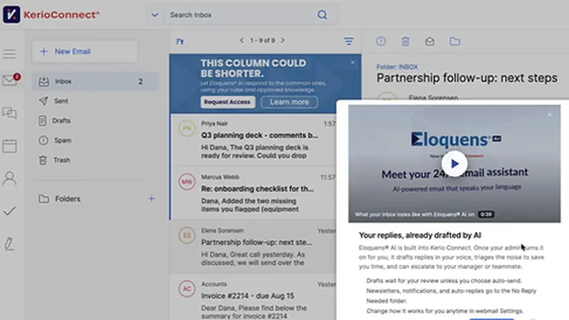

DXC × LangChain: governed AI agents for mission-critical IT, with 95% faster incident resolution
GFI Software announced on Tuesday that Eloquens AI, its AI email automation platform, is now built directly into GFI KerioConnect — the mail and collaboration server deployed by more than 30,000 organizations. The pitch: an AI email assistant that works inside the server you already own, so getting AI help doesn’t mean moving your mail to someone else’s cloud.
GFI CEO Eric Vaughan unveiled the integration during his keynote at ZEBR.AI Roadshow Praha 2026 in Prague — in the country where Kerio was founded in 1997. Eloquens AI is available today for KerioConnect customers running version 10.0.9-10757 or later.
The self-hosted pitch
AI email assistants like Microsoft 365 Copilot and Gmail’s Gemini were built for organizations that had already moved their mail to the big clouds. Many KerioConnect customers run their own mail on purpose — to control their data, meet regulations, or keep costs down. GFI’s argument is that they shouldn’t be penalized for that choice: since the GenAI revolution began, Vaughan said, AI in email came with a hidden price tag — “move your mail to Microsoft or Google first.”
Embedding the assistant in the server itself is the counter-move: the AI works where the mail already lives, rather than requiring a migration to unlock it.
What it actually does
Within minutes of a message arriving, Eloquens AI decides what it needs. Notifications and newsletters move to a “No Reply Needed” folder. Messages that need a decision stay in the inbox, clearly labeled. Routine questions get a reply waiting in Drafts, written in the user’s own voice and ready to review and send — and every decision comes with its reasoning, so users can see why the assistant acted.
It works across KerioConnect webmail, the desktop client, and Microsoft Outlook.
The customer stays in control
The assistant is off until an administrator turns it on from the KerioConnect administration console. Mail stays on the customer’s own server, administrators choose exactly which mailboxes get the assistant, and they can switch it off at any time. One click starts a 30-day free trial, with no sales call or setup — and for managed service providers, it becomes a new service they can offer every customer from the console they already manage.

The IgniteTech connection
Eloquens AI is the email-automation platform GFI’s sister company IgniteTech created in 2024. It sits in a portfolio that also includes MyPersonas, for cloning expertise, and Adminio AI, for meeting coordination — all built, the company says, on its patent-pending AI-enabled data structures. Distribution runs through ZEBR.AI (formerly Zebra Systems), a GFI distributor of more than 15 years across Europe and North America, whose CEO Zdeněk Bínek called it “something new to offer tomorrow morning” to partners.
Sources: newswire.ca — “GFI Builds Eloquens AI Directly Into GFI KerioConnect” (October 13, 2026); PRNewswire; Morningstar.
DXC — “DXC and LangChain Advance Agentic AI Harnesses for Mission-Critical IT Operations” (October 13, 2026); PRNewswire; Unite.ai — “DXC Technology Partners with LangChain to Scale Governed AI Agents”.